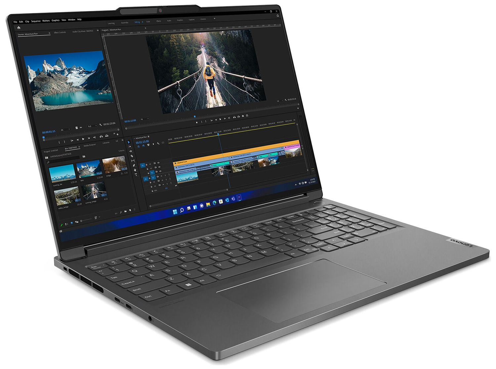

Lenovo ThinkBook 16p G4 IRH
Краткое описание
Lenovo Thinkbook 16p G4 IRH 21J80018UE_RU — мощный, быстрый ноутбук с поддержкой инновационной видеокарты и технологий трассировки лучей. Подходит для запуска онлайн-игр любой сложности, может использоваться для работы с графическими приложениями на основе нейросетей.
Характеристики
Подробное описание
Ноутбук на базе четырнадцатиядерного процессора Intel с частотой 2.4 ГГц - 5 ГГц, с оперативной памятью DDR5 объемом 16384 Мб, SSD 512 Гб для супербыстрой работы операционной системы будет Вашим надежным помощником в бизнесе и дома. Матовый дисплей ноутбука 16" по технологии IPS с разрешением WQXGA 2560x1600 прекрасно передает изображение благодаря видеокарте от nVidia с 8192 Мб дискретной видеопамяти. Ноутбук Lenovo ThinkBook 16p G4 IRH 21J80018UE серого цвета имеет вес 2.2 кг и оборудован всем необходимым: веб-камера, стереодинамики, микрофон, USB3.2 - 2 шт, Output (наушники), Mic in (микрофон), HDMI, Card Reader есть, WiFi, Bluetooth.
Все права защищены © 2026